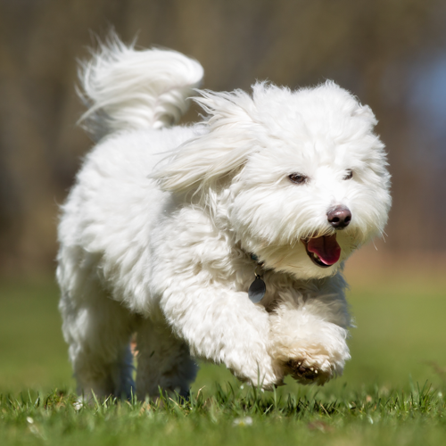

Meet Sariah!

Sariah is the matron of the family. She's not afraid to break up fights and keep the others in line, although she's not opposed to having some fun every now and then too. She LOVES to run around in the sprinklers. Cotons are naturally water friendly. They were bred to be a sailor's dog and have a natural kinship to the water. They are fiercly loyal animals and will follow their favorite person around the house, as Sariah does with me. Sariah is the matron of the family. She's not afraid to break up fights and keep the others in line, although she's not opposed to having some fun every now and then. She LOVES to run around in the sprinklers. Cotons are naturally water friendly. They were bred to be a sailor's dog and have a natural kinship to the water. They are fiercly loyal animals and will follow their favorite person around the house, as Sariah does with me. Sariah is the matron of the family. She's not afraid to break up fights and keep the others in line, although she's not opposed to having some fun every now and then. She LOVES to run around in the sprinklers. Cotons are naturally water friendly. They were bred to be a sailor's dog and have a natural kinship to the water. They are fiercly loyal animals and will follow their favorite person around the house, as Sariah does with me. Sariah is the matron of the family. She's not afraid to break up fights and keep the others in line, although she's not opposed to having some fun every now and then. She LOVES to run around in the sprinklers. Cotons are naturally water friendly. They were bred to be a sailor's dog and have a natural kinship to the water. They are fiercly loyal animals and will follow their favorite person around the house, as Sariah does with me. Sariah is the matron of the family. She's not afraid to break up fights and keep the others in line, although she's not opposed to having some fun every now and then. She LOVES to run around in the sprinklers. Cotons are naturally water friendly. They were bred to be a sailor's dog and have a natural kinship to the water. They are fiercly loyal animals and will follow their favorite person around the house, as Sariah does with me.